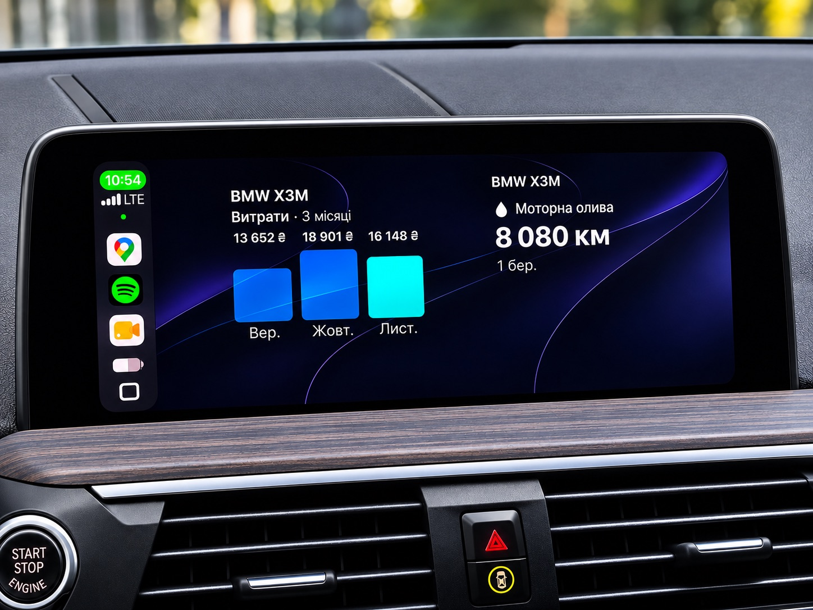

Заміна оливи · 86 300 кмГальмівні колодки · 84 500 кмПланове ТО · 76 000 км
АВТО ПАМ’ЯТАЄ ВСЕ
Сервісна книжка,
яка не загубиться.
Усі роботи, витрати й нагадування зібрані разом — приватно, зрозуміло й завжди на вашому iPhone.
ЗАПИШИТО
●●●
☺
АВТО
⌁
CarBook робить більше.
Олива через 850 кмСаме вчасно.
CarBook пам’ятає, щоб ви не забували.
У ДОРОЗІ
Віджети CarPlay.
Витрати й найближче обслуговування — прямо на екрані авто. Усе важливе видно одразу, не торкаючись телефона.
ВитратиПробіг до ТООдним поглядом

Готовий до кожного кілометра.
CarBook для iPhone · iOS 17+